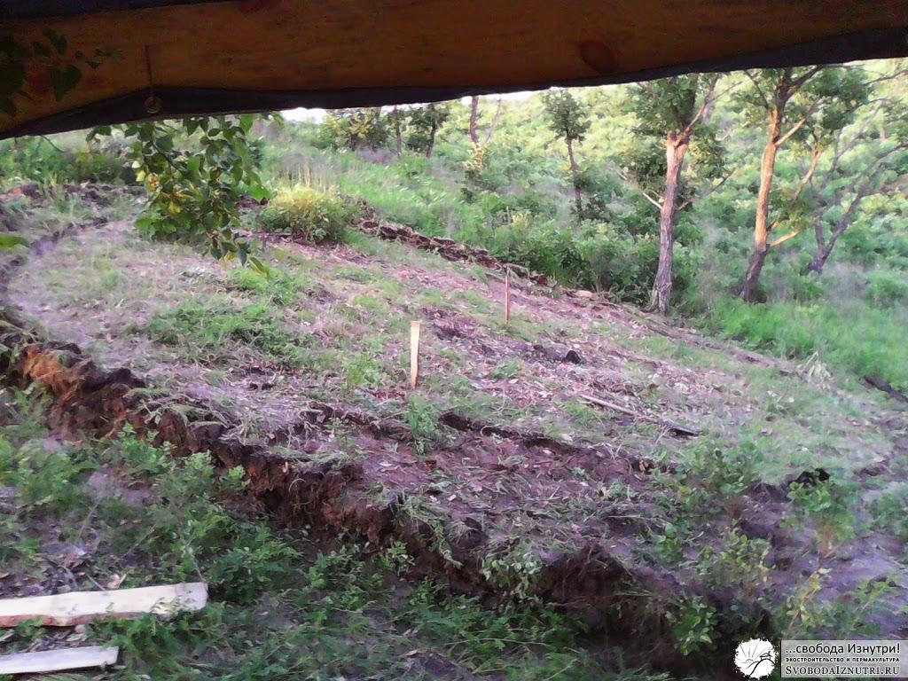
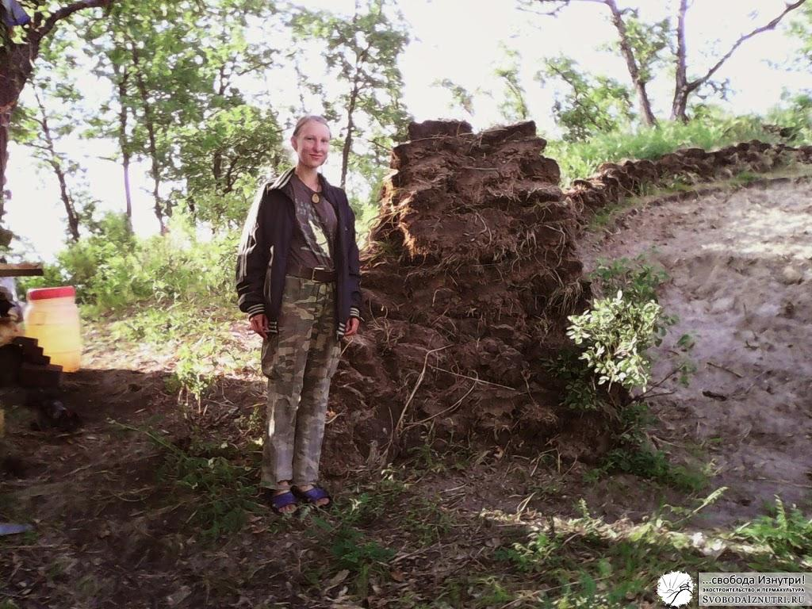
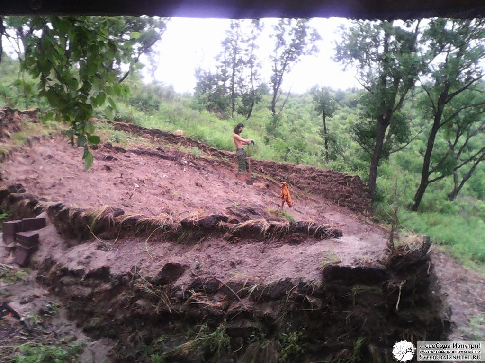
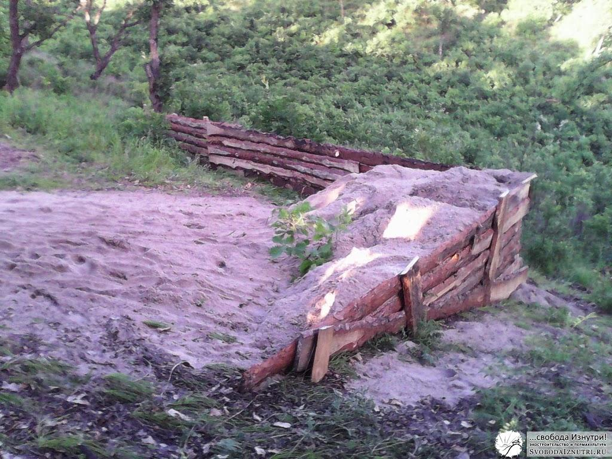
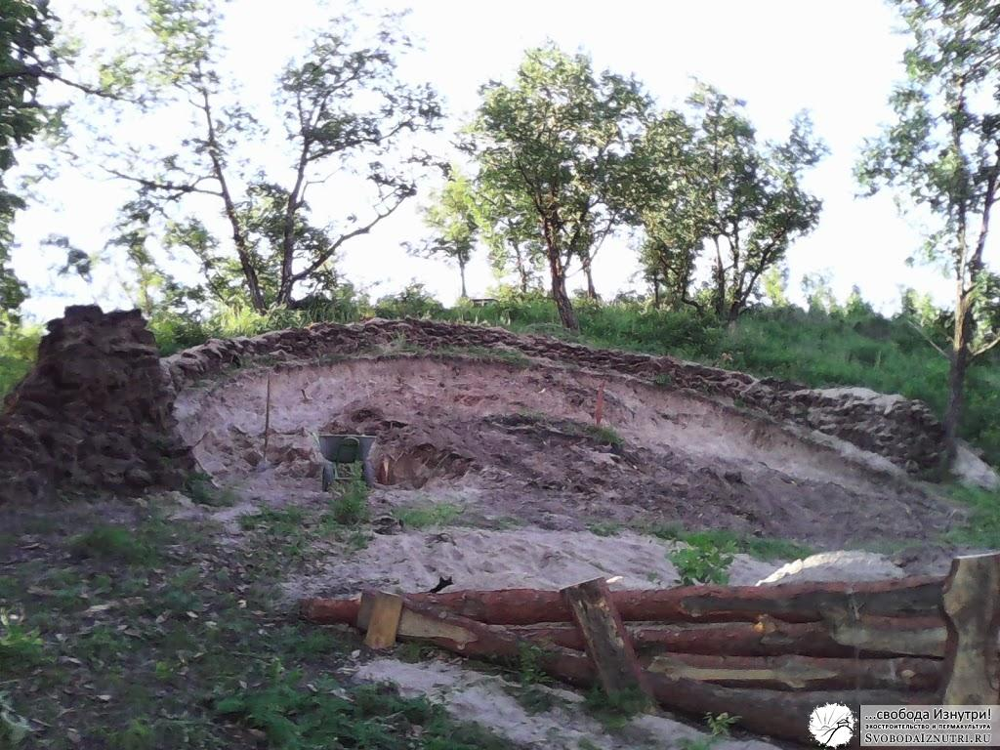
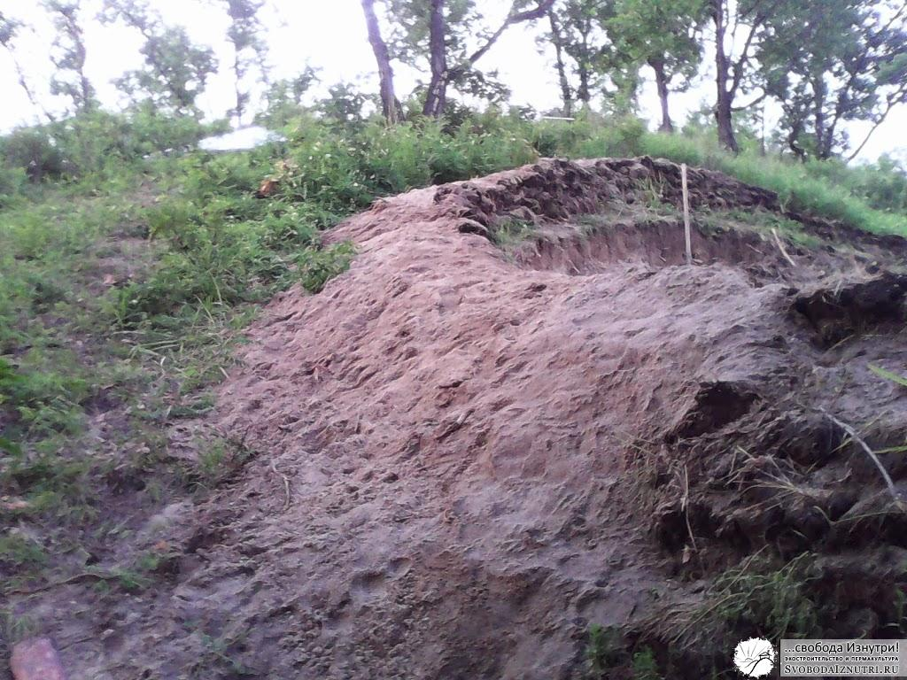
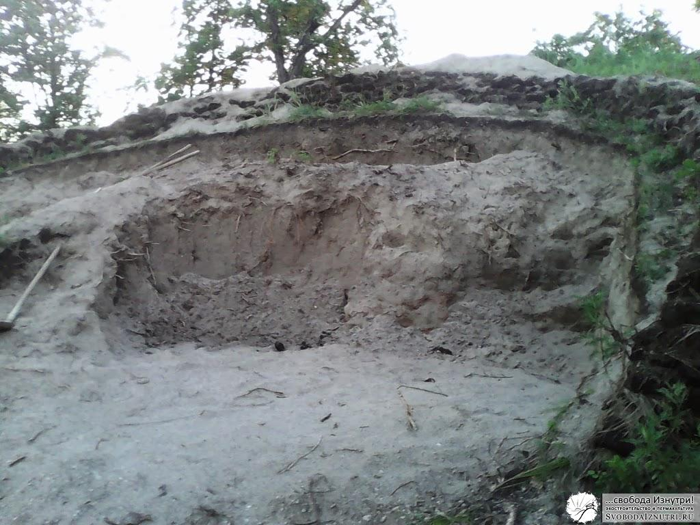
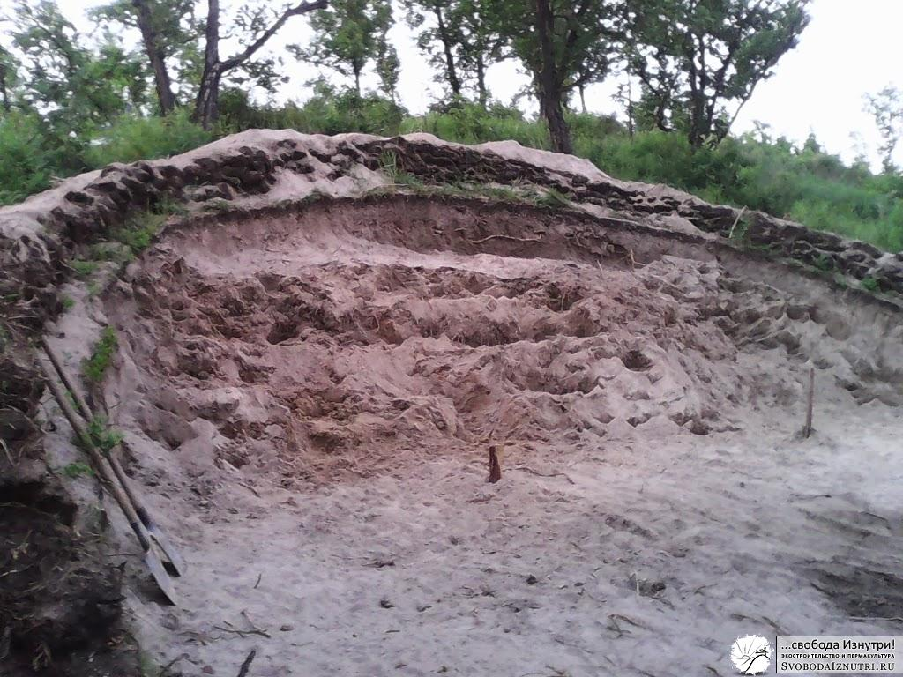
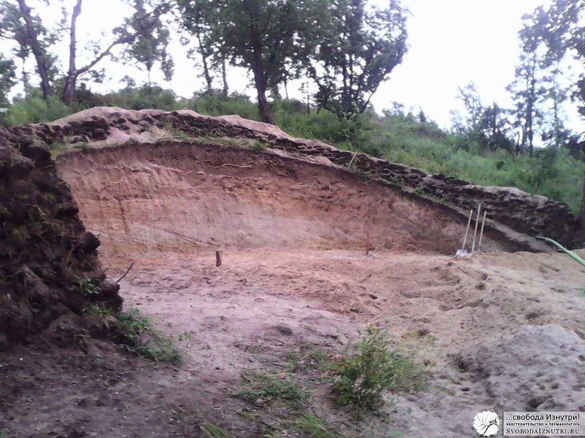

Вредный экскаватор или Роем котлован вручную!
Закончили на том, как жили в доме на дереве и начали рыть котлован для нашего будущего экодома. Разумеется, нам в голову приходила мысль нанять экскаватор. И у нас были на него деньги.
Но мы понимали, что экскаватор может нанести вреда не меньше чем пользы. И платить за этот вред придётся своим временем (и, возможно, деньгами). На восстановление. Но некоторые вещи вообще невосстановимы. Так что мы прикинулись рыцарями и стали рыться :)
У нас перед глазами был пример соседей, которые копали экскаватором озёра, и решили заодно котлованчик и для дома копнуть. Результат: постоянно обрушивающиеся стены котлована из-за повреждений, нанесённых ковшом. Плюс, дёрн и грунт хаотично лежали на краю котлована сверху, тем самым давили на стены котлована и тоже способствовали их разрушению. Напомню, и мы, и соседи построили дома, вкопанные в холм.
Наиболее яркие примеры негативных последствий применения тяжёлой техники при строительстве приводятся в книге Янто Эванса «Дом из самана. Философия и практика». Кстати, очень рекоммендую. На мой взгляд, в этой книге философское содержание гораздо ценнее практического. Но всё же от философии перейдём к практике!
Снимаем дёрн
Процесс рытья любой большой ямы чаще всего делится на две части: снятие дёрна и непосредственно рытьё. Особенно интересно, если вы хотите сохранить дёрн для хозяйственных целей: накрыть им крышу или защитить от эрозии открытый участок грунта.
Сначала мы хотели оставить дёрн для крыши, но увидев как у соседа дожди размывают стены котлована, решили делать из него дренажную стену. Т.е. стену, которая не даст воде течь в котлован (и в будущем в дом) и отведёт её в сторону.
В начале возведения может показаться что дерновая стена ненадёжна. У нас даже возникала необходимость местами проколоть её деревянными кольями для прочности. Но к осени она срослась так, что отодрать отдельный кирпичик от стены довольно тяжело. То ли ещё будет через год: по весне растения в стене так сцепятся корнями, что и не отдерёшь. Плюс вся стена врастёт в землю.
В помощь будущим снимальщикам дёрна: 1) Пользуйтесь гравитацией. Старайтесь по максимуму использовать свой вес и резать сверху. 2) Лучше делать дерновые кирпичики побольше: меньше таскать придётся и в целом удобнее и надёжнее. 3) Старайтесь не тратить силы на разрубание кочек с травой. Лучше обойти растение стороной и сохранить его корневую систему. Благодаря этому дерновые кирпичи будут прочнее. 4) Гораздо эффективнее сначала нарезать много кирпичей, а потом таскать их и раскладывать. Пореже меняйте вид деятельности. С другой стороны, совсем не меняя его быстрее устаёшь. Ищите гармонию :)



Мы освобождали от дёрна примерно 80 м² площади и потратили на это 5 рабочих дней (на самом деле полторы недели, но это я постоянно мотался в город по делам). Напомню, дом у нас около 40 м² внутренней площади. Остальное — для создания вентиляционного зазора между стенами дома и стенами котлована.
Копаем котлован
Копать — дело нехитрое. Копай да копай. Наши инструменты: две штыковые лопаты, одна подборная (ей почти не пользовались) и садовая телега на 150 кг. Телега — крайне полезное изобретение!
О чём стоит упомянуть ещё: 1) Чтобы грунт не рассыпался по всему склону, я возвёл небольшую стеночку из горбыля. 2) На первых этапах грунт необязательно свозить вниз, его можно закидывать наверх и тем самым укреплять дренажную стену. Главное не переусердствовать, чтоб не получилось как у нашего соседа. 3) Состав нашего грунта: глина/песок, примерно 1/4-10. Разброс такой потому что кое-где попадались очень твёрдые куски глины с песком, примерно 1/4-5 (готовая саманная смесь!), но их было мало. Попадались места практически с чистым песком, но их тоже было мало. Основная масса грунта примерно 1/8. Копается такая смесь очень легко. 4) У нас было дерево на востоке и группа деревьев на западе от котлована. Получалось, что с утра (как только пропадали комары) мы работали в тени восточного дерева, потом в отсутствие тени отдыхали, а ближе к вечеру работали в тени от западных деревьев (до появления комаров). Если бы тени не было вообще, копать было бы в разы тяжелее. Подумайте над этим когда будете выбирать место строительства своего дома. 5) На последних этапах удобно делать терассы и скидывать грунт в телегу сверху, не поднимая лопаты. На самом деле так можно делать и на первых этапах, но то ли мы не догадались, то ли виноват пункт 4... 6) Готовые стены котлована не вертикальны, а имеют некоторый угол. Так прочнее, устойчивее и в целом надёжнее. По сравнению с верхней гранью котлована, нижняя часть стены выпирает сантиметров на 30-50. Мы рассчитывали на 20, и эту цифру закладывали в расчёты при разметке. Но реальность оказалась иной, поэтому проект пришлось немного корректировать. Короче, вместо полноценного вентиляционного корридора (который можно использовать в качестве погреба) у нас получился просто вентзазор в 20-50 см.






Результат наших телодвижений предстал перед нами 22 июля 2013 года. Учитывая, что разметку мы начали 23 июня, можно считать, что снятие дёрна и копка заняли месяц. Но напомню, что работал я в среднем 4 дня в неделю, остальное время находился в городе: отдыхал от работы работая на работе :)
Философия
Я уже писал, что мы принципиально не хотели использовать тяжёлую технику и электроинструмент. Почему? Загляните в упомянутую в начале статьи книгу, там очень подробно про это написано. Я же поделюсь собственным опытом.
Вручную работа точнее и деликатнее. Наш готовый котлован не только красивее котлована наших соседей. Он конструктивно лучше. У него есть дренажная стена из дёрна (со временем она будет набирать прочность), причём с переменной высотой и толщиной, эстетически приятная на вид. Стены котлована не вертикальны и имеют уклон. Плюс, они не повреждены. Наш котлован круглый, и это многократно повышает прочность и устойчивость грунта.
Всё это плюсы ручной работы. Есть и минусы. Это долго и тяжело. Не сказать что совсем тяжело (мы вообще старались работать в удовольствие), но определённо не легко. Тяжёлой техникой быстрее и легче.
НО! Тяжёлую технику нанимают на время, поэтому чаще всего работы с ней производятся в спешке, в целях экономии. «Поспешишь — людей насмешишь»: 1) Соседу экскаватор повредил стены котлована, оставив борозды от зубьев ковша. 2) Несмотря на то, что сосед просил экскаваторщика сделать наклонные стены, экскаваторщик сделал вертикальные, "для красоты", как он потом сказал. 3) Сосед не подумал и сказал экскаваторщику закидывать грунт сверху, над котлованом и с его сторон. Закинуто было как попало, хаотично. 4) Быстрее и проще было сделать квадратный котлован. Именно такой и был сделан. Совокупность этих факторов привела к тому, что эта квадратная "красота" осыпáлась от ветра, дождей и под действием веса лежащего сверху грунта. В одном из углов осыпалось 1,5 метра грунта в глубину, вместе с грунтом, лежащим сверху... Это я ещё не сказал про побочный вред типа уплотнённого грунта везде, где проехали гусеницы экскаватора и "нечаянно" поваленные деревья. А что если именно из-за этого дерева вы и решили строить дом именно этом месте? Выиграли время, что скажешь...
Мы же никуда не спешили. Мы делали так, как дóлжно. И ни разу не жалели о "просранном месяце" (слова одного персонажа, убеждавшего нас нанять экскаватор). Более того, именно во время рытья котлована к нам пришли большинство небольших идей по улучшению, оптимизации и прочим "мелочам", которые в совокупности сделали наш дом лучше, красивее, теплее, эргономичнее, экономичнее, уютнее. По субъективным ощущениям благодаря этим идеям дом стал лучше раза в два. Ну уж в полтора — как минимум.
Это потому, что во время копки мы думали о доме. Можно в этой монотонной медитации думать над каким-то, скажем, научным изобретением. И гарантирую, что результат будет отличный!
Пожалуй, хватит на сегодня информации к размышлению. Не стесняйтесь задавать вопросы в комментариях.
Комментарии
Антон
Непонятно откуда взялись 150 кв метров дерна. Дом 40 кв м. 4 см радиус, вы накинули еще один метр, вышло 5 метров в радиусе, а это 80 кв м. А что бы получить такую площадь это нужен радиус в 7 метров
svobodaiznutri
Блин, вот я лоханулся! Благодарю!
Вот что бывает, когда расчёты проводишь не на свежую голову :) Поправил